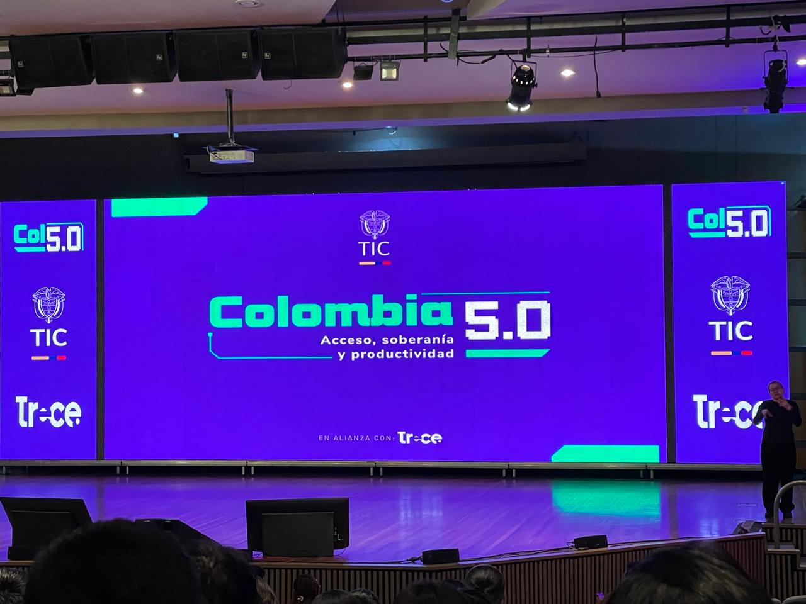
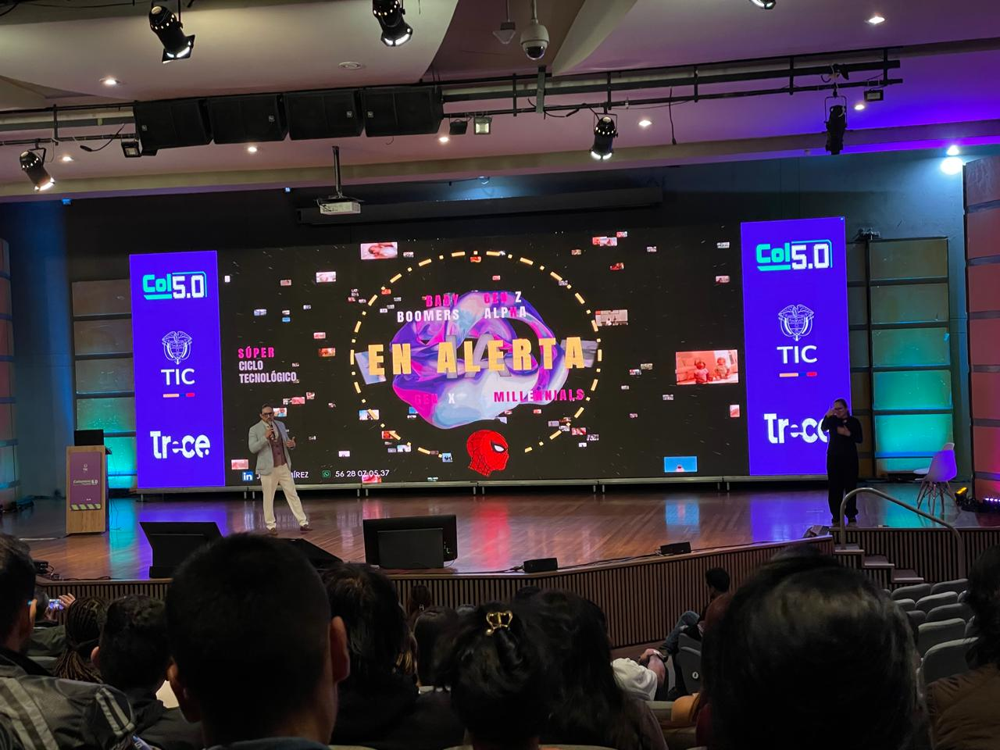
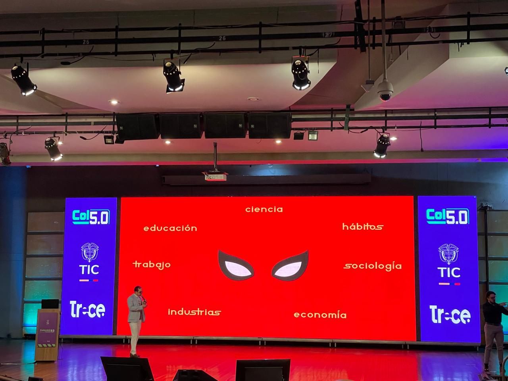
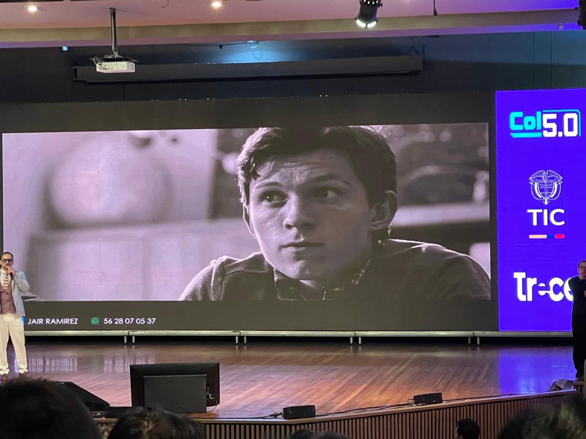
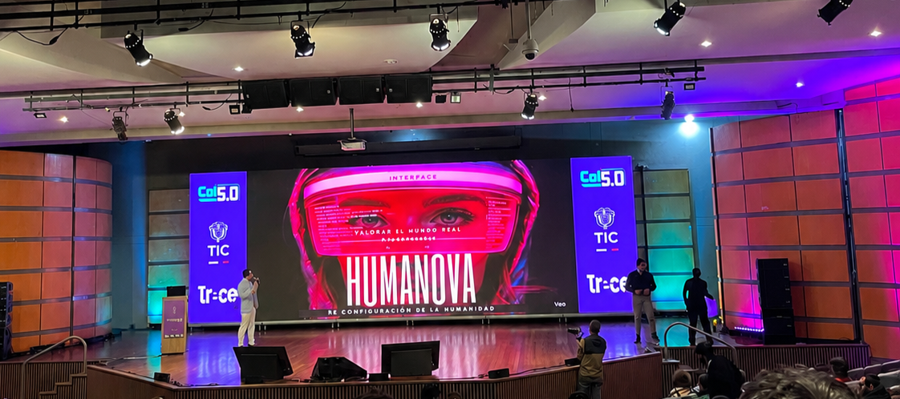
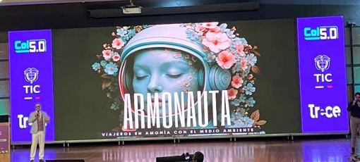

Transformación digital para un futuro más conectado e inclusivo
Colombia 5.0 es una iniciativa transformadora que busca digitalizar todos los aspectos de la sociedad colombiana presentada en corferias, desde la educación hasta la economía, generando oportunidades para millones de personas.
Nuestro objetivo es posicionar a Colombia como líder en innovación y transformación digital en América Latina, creando ecosistemas de emprendimiento, fortaleciendo la infraestructura tecnológica y capacitando al talento humano.
Con Colombia 5.0, buscamos que cada colombiano tenga acceso a las herramientas digitales necesarias para prosperar en el siglo XXI.
Desarrollo de redes de banda ancha, centros de datos y conectividad en todo el territorio nacional para garantizar acceso equitativo.
Programas de capacitación en habilidades digitales, programación e innovación para todas las edades y niveles educativos.
Apoyo a emprendimientos digitales, e-commerce y transformación de empresas tradicionales hacia modelos innovadores.
Protección de datos, cumplimiento normativo y seguridad de información en todas las transacciones digitales.
Garantizar que todas las poblaciones, incluyendo zonas rurales, puedan beneficiarse de la transformación digital.
Alianzas estratégicas entre gobierno, empresa privada y academia para impulsar la innovación continua.






En 2026, la iniciativa evoluciona formalmente hacia Colombia 5.0, consolidando una transición enfocada en la soberanía tecnológica y un modelo centrado en las personas. Liderado por el Ministerio TIC, este ecosistema conecta activamente al Estado, la academia y las empresas privadas para mitigar las brechas de conectividad territorial, impulsando de manera práctica la Inteligencia Artificial, soluciones de ciberseguridad, y el desarrollo de tecnologías inmersivas aplicadas a la salud (SaludTech) y la educación (Edutech).
Durante este año, la gira nacional recorre múltiples departamentos del país (como Caldas, Magdalena, Chocó y La Guajira), descentralizando el conocimiento técnico e integrando a más de 4.9 millones de ciudadanos en zonas rurales bajo la visión global de construir una "Sociedad 5.0" integradora y productiva.